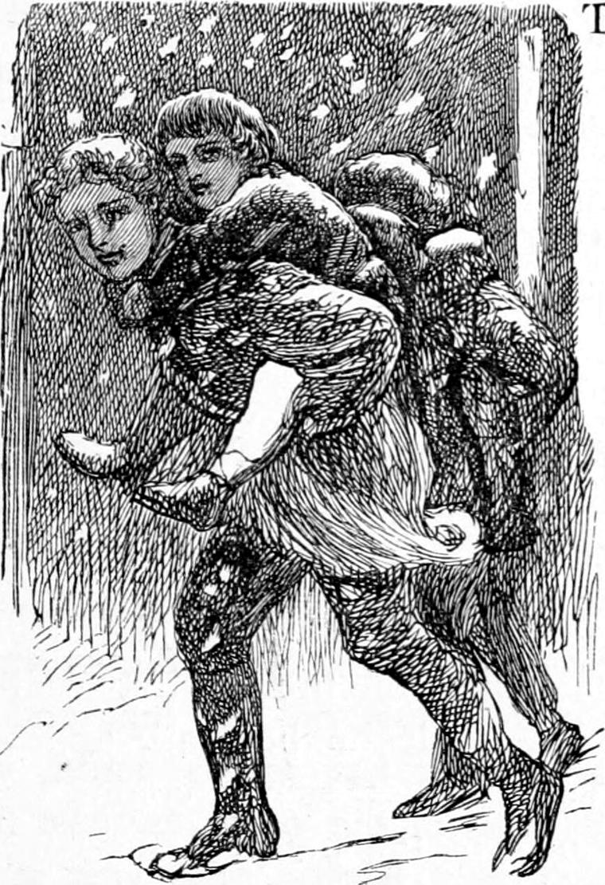
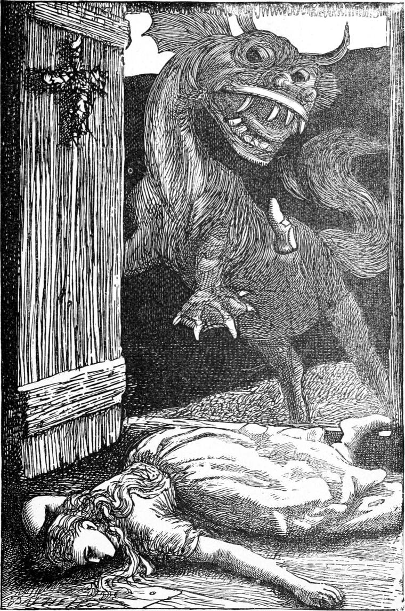
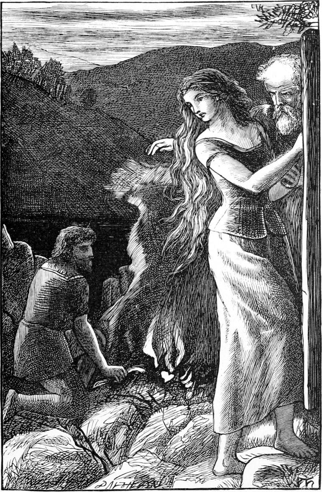

It was a snowy evening in the depth of winter. Kirsty had promised to tell us the tale of the armed knight who lay in stone upon the tomb in the church; but the snow was so deep, that Mrs. Mitchell, always glad when nature put it in her power to exercise her authority in a way disagreeable to us, had refused to let the little ones go out all day. Therefore Turkey and I, when the darkness began to grow thick enough, went prowling and watching about the manse until we found an opportunity when she was out of the way. The moment this occurred we darted into the nursery, which was on the ground floor, and catching up my two brothers, I wee Davie, he Allister, we hoisted them on our backs and rushed from the house. It was snowing. It came down in huge flakes, but although it was only half-past four o’clock, they did not show any whiteness, for there was no light to shine upon them. You might have thought there had been mud in the cloud they came from, which had turned them all a dark grey. How the little ones did enjoy it, spurring their horses with suppressed laughter, and urging us on lest the old witch should hear and overtake us! But it was hard work for one of the horses, and that was myself. Turkey scudded away with his load, and made nothing of it; but wee Davie pulled so hard with his little arms round my neck, especially when he was bobbing up and down to urge me on, half in delight, half in terror, that he nearly choked me; while if I went one foot off the scarcely beaten path, I sunk deep in the fresh snow.
“Doe on, doe on, Yanal!” cried Davie; and Yanal did his very best, but was only halfway to the farm, when Turkey came bounding back to take Davie from him. In a few moments we had shaken the snow off our shoes and off Davie’s back, and stood around Kirsty’s “booful baze”, as Davie called the fire. Kirsty seated herself on one side with Davie on her lap, and we three got our chairs as near her as we could, with Turkey, as the valiant man of the party, farthest from the centre of safety, namely Kirsty, who was at the same time to be the source of all the delightful horror. I may as well say that I do not believe Kirsty’s tale had the remotest historical connection with Sir Worm Wymble, if that was anything like the name of the dead knight. It was an old Highland legend, which she adorned with the flowers of her own Celtic fancy, and swathed around the form so familiar to us all.
“There is a pot in the Highlands,” began Kirsty, “not far from our house, at the bottom of a little glen. It is not very big, but fearfully deep; so deep that they do say there is no bottom to it.”
“An iron pot, Kirsty?” asked Allister.
“No, goosey,” answered Kirsty. “A pot means a great hole full of water—black, black, and deep, deep.”
“Oh!” remarked Allister, and was silent.
“Well, in this pot there lived a kelpie.”
“What’s a kelpie, Kirsty?” again interposed Allister, who in general asked all the necessary questions and at least as many unnecessary.
“A kelpie is an awful creature that eats people.”
“But what is it like, Kirsty?”
“It’s something like a horse, with a head like a cow.”
“How big is it? As big as Hawkie?”
“Bigger than Hawkie; bigger than the biggest ox you ever saw.”
“Has it a great mouth?”
“Yes, a terrible mouth.”
“With teeth?”
“Not many, but dreadfully big ones.”
“Oh!”
“Well, there was a shepherd many years ago, who lived not far from the pot. He was a knowing man, and understood all about kelpies and brownies and fairies. And he put a branch of the rowan-tree (mountain-ash), with the red berries in it, over the door of his cottage, so that the kelpie could never come in.
“Now, the shepherd had a very beautiful daughter—so beautiful that the kelpie wanted very much to eat her. I suppose he had lifted up his head out of the pot some day and seen her go past, but he could not come out of the pot except after the sun was down.”
“Why?” asked Allister.
“I don’t know. It was the nature of the beast. His eyes couldn’t bear the light, I suppose; but he could see in the dark quite well.—One night the girl woke suddenly, and saw his great head looking in at her window.”
“But how could she see him when it was dark?” said Allister.
“His eyes were flashing so that they lighted up all his head,” answered Kirsty.
“But he couldn’t get in!”
“No; he couldn’t get in. He was only looking in, and thinking how he should like to eat her. So in the morning she told her father. And her father was very frightened, and told her she must never be out one moment after the sun was down. And for a long time the girl was very careful. And she had need to be; for the creature never made any noise, but came up as quiet as a shadow. One afternoon, however, she had gone to meet her lover a little way down the glen; and they stopped talking so long, about one thing and another, that the sun was almost set before she bethought herself. She said good-night at once, and ran for home. Now she could not reach home without passing the pot, and just as she passed the pot, she saw the last sparkle of the sun as he went down.”
“I should think she ran!” remarked our mouthpiece, Allister.
“She did run,” said Kirsty, “and had just got past the awful black pot, which was terrible enough day or night without such a beast in it, when—”
“But there was the beast in it,” said Allister.
“When,” Kirsty went on without heeding him, “she heard a great whish of water behind her. That was the water tumbling off the beast’s back as he came up from the bottom. If she ran before, she flew now. And the worst of it was that she couldn’t hear him behind her, so as to tell whereabouts he was. He might be just opening his mouth to take her every moment. At last she reached the door, which her father, who had gone out to look for her, had set wide open that she might run in at once; but all the breath was out of her body, and she fell down flat just as she got inside.”
Here Allister jumped from his seat, clapping his hands and crying—
“Then the kelpie didn’t eat her!—Kirsty! Kirsty!”
“No. But as she fell, one foot was left outside the threshold, so that the rowan branch could not take care of it. And the beast laid hold of the foot with his great mouth, to drag her out of the cottage and eat her at his leisure.”
Here Allister’s face was a picture to behold! His hair was almost standing on end, his mouth was open, and his face as white as my paper.
“Make haste, Kirsty,” said Turkey, “or Allister will go in a fit.”
“But her shoe came off in his mouth, and she drew in her foot and was safe.”

Allister’s hair subsided. He drew a deep breath, and sat down again. But Turkey must have been a very wise or a very unimaginative Turkey, for here he broke in with—
“I don’t believe a word of it, Kirsty.”
“What!” said Kirsty—“don’t believe it!”
“No. She lost her shoe in the mud. It was some wild duck she heard in the pot, and there was no beast after her. She never saw it, you know.”
“She saw it look in at her window.”
“Yes, yes. That was in the middle of the night. I’ve seen as much myself when I waked up in the middle of the night. I took a rat for a tiger once.”
Kirsty was looking angry, and her needles were going even faster than when she approached the climax of the shoe.
“Hold your tongue, Turkey,” I said, “and let us hear the rest of the story.”
But Kirsty kept her eyes on her knitting, and did not resume.
“Is that all, Kirsty?” said Allister.
Still Kirsty returned no answer. She needed all her force to overcome the anger she was busy stifling. For it would never do for one in her position to lose her temper because of the unbelieving criticism of a herd-boy. It was a curious instance of the electricity flashed out in the confluence of unlike things—the Celtic faith and the Saxon works. For anger is just the electric flash of the mind, and requires to have its conductor of common sense ready at hand. After a few moments she began again as if she had never stopped and no remarks had been made, only her voice trembled a little at first.
“Her father came home soon after, in great distress, and there he found her lying just within the door. He saw at once how it was, and his anger was kindled against her lover more than the beast. Not that he had any objection to her going to meet him; for although he was a gentleman and his daughter only a shepherd’s daughter, they were both of the blood of the MacLeods.”
This was Kirsty’s own clan. And indeed I have since discovered that the original legend on which her story was founded belongs to the island of Rasay, from which she came.
“But why was he angry with the gentleman?” asked Allister.
“Because he liked her company better than he loved herself,” said Kirsty. “At least that was what the shepherd said, and that he ought to have seen her safe home. But he didn’t know that MacLeod’s father had threatened to kill him if ever he spoke to the girl again.”
“But,” said Allister, “I thought it was about Sir Worm Wymble—not Mr. MacLeod.”
“Sure, boy, and am I not going to tell you how he got the new name of him?” returned Kirsty, with an eagerness that showed her fear lest the spirit of inquiry should spread. “He wasn’t Sir Worm Wymble then. His name was—”
Here she paused a moment, and looked full at Allister.
“His name was Allister—Allister MacLeod.”
“Allister!” exclaimed my brother, repeating the name as an incredible coincidence.
“Yes, Allister,” said Kirsty. “There’s been many an Allister, and not all of them MacLeods, that did what they ought to do, and didn’t know what fear was. And you’ll be another, my bonnie Allister, I hope,” she added, stroking the boy’s hair.
Allister’s face flushed with pleasure. It was long before he asked another question.
“Well, as I say,” resumed Kirsty, “the father of her was very angry, and said she should never go and meet Allister again. But the girl said she ought to go once and let him know why she could not come any more; for she had no complaint to make of Allister; and she had agreed to meet him on a certain day the week after; and there was no post-office in those parts. And so she did meet him, and told him all about it. And Allister said nothing much then. But next day he came striding up to the cottage, at dinner-time, with his claymore (gladius major) at one side, his dirk at the other, and his little skene dubh (black knife) in his stocking. And he was grand to see—such a big strong gentleman I And he came striding up to the cottage where the shepherd was sitting at his dinner.
“‘Angus MacQueen,’ says he, ‘I understand the kelpie in the pot has been rude to your Nellie. I am going to kill him.’ ‘How will you do that, sir?’ said Angus, quite short, for he was the girl’s father. ‘Here’s a claymore I could put in a peck,’ said Allister, meaning it was such good steel that he could bend it round till the hilt met the point without breaking; ‘and here’s a shield made out of the hide of old Rasay’s black bull; and here’s a dirk made of a foot and a half of an old Andrew Ferrara; and here’s a skene dubh that I’ll drive through your door, Mr. Angus. And so we’re fitted, I hope.’ ‘Not at all,’ said Angus, who as I told you was a wise man and a knowing; ‘not one bit,’ said Angus. ‘The kelpie’s hide is thicker than three bull-hides, and none of your weapons would do more than mark it.’ ‘What am I to do then, Angus, for kill him I will somehow?’ ‘I’ll tell you what to do; but it needs a brave man to do that.’ ‘And do you think I’m not brave enough for that, Angus?’ ‘I know one thing you are not brave enough for.’ ‘And what’s that?’ said Allister, and his face grew red, only he did not want to anger Nelly’s father. ‘You’re not brave enough to marry my girl in the face of the clan,’ said Angus. ‘But you shan’t go on this way. If my Nelly’s good enough to talk to in the glen, she’s good enough to lead into the hall before the ladies and gentlemen.’
“Then Allister’s face grew redder still, but not with anger, and he held down his head before the old man, but only for a few moments. When he lifted it again, it was pale, not with fear but with resolution, for he had made up his mind like a gentleman. ‘Mr. Angus MacQueen,’ he said, ‘will you give me your daughter to be my wife?’ ‘If you kill the kelpie, I will,’ answered Angus; for he knew that the man who could do that would be worthy of his Nelly.”
“But what if the kelpie ate him?” suggested Allister.
“Then he’d have to go without the girl,” said Kirsty, coolly. “But,” she resumed, “there’s always some way of doing a difficult thing; and Allister, the gentleman, had Angus, the shepherd, to teach him.
“So Angus took Allister down to the pot, and there they began. They tumbled great stones together, and set them up in two rows at a little distance from each other, making a lane between the rows big enough for the kelpie to walk in. If the kelpie heard them, he could not see them, and they took care to get into the cottage before it was dark, for they could not finish their preparations in one day. And they sat up all night, and saw the huge head of the beast looking in now at one window, now at another, all night long. As soon as the sun was up, they set to work again, and finished the two rows of stones all the way from the pot to the top of the little hill on which the cottage stood. Then they tied a cross of rowan-tree twigs on every stone, so that once the beast was in the avenue of stones he could only get out at the end. And this was Nelly’s part of the job. Next they gathered a quantity of furze and brushwood and peat, and piled it in the end of the avenue next the cottage. Then Angus went and killed a little pig, and dressed it ready for cooking.
“‘Now you go down to my brother Hamish,’ he said to Mr. MacLeod; ‘he’s a carpenter, you know,—and ask him to lend you his longest wimble.’”
“What’s a wimble?” asked little Allister.
“A wimble is a long tool, like a great gimlet, with a cross handle, with which you turn it like a screw. And Allister ran and fetched it, and got back only half an hour before the sun went down. Then they put Nelly into the cottage, and shut the door. But I ought to have told you that they had built up a great heap of stones behind the brushwood, and now they lighted the brushwood, and put down the pig to roast by the fire, and laid the wimble in the fire halfway up to the handle. Then they laid themselves down behind the heap of stones and waited.

“By the time the sun was out of sight, the smell of the roasting pig had got down the avenue to the side of the pot, just where the kelpie always got out. He smelt it the moment he put up his head, and he thought it smelt so nice that he would go and see where it was. The moment he got out he was between the stones, but he never thought of that, for it was the straight way to the pig. So up the avenue he came, and as it was dark, and his big soft web feet made no noise, the men could not see him until he came into the light of the fire. ‘There he is!’ said Allister. ‘Hush!’ said Angus, ‘he can hear well enough.’ So the beast came on. Now Angus had meant that he should be busy with the pig before Allister should attack him; but Allister thought it was a pity he should have the pig, and he put out his hand and got hold of the wimble, and drew it gently out of the fire. And the wimble was so hot that it was as white as the whitest moon you ever saw. The pig was so hot also that the brute was afraid to touch it, and before ever he put his nose to it Allister had thrust the wimble into his hide, behind the left shoulder, and was boring away with all his might. The kelpie gave a hideous roar, and turned away to run from the wimble. But he could not get over the row of crossed stones, and he had to turn right round in the narrow space before he could run. Allister, however, could run as well as the kelpie, and he hung on to the handle of the wimble, giving it another turn at every chance as the beast went floundering on; so that before he reached his pot the wimble had reached his heart, and the kelpie fell dead on the edge of the pot. Then they went home, and when the pig was properly done they had it for supper. And Angus gave Nelly to Allister, and they were married, and lived happily ever after.”
“But didn’t Allister’s father kill him?”
“No. He thought better of it, and didn’t. He was very angry for a while, but he got over it in time. And Allister became a great man, and because of what he had done, he was called Allister MacLeod no more, but Sir Worm Wymble. And when he died,” concluded Kirsty, “he was buried under the tomb in your father’s church. And if you look close enough, you’ll find a wimble carved on the stone, but I’m afraid it’s worn out by this time.”